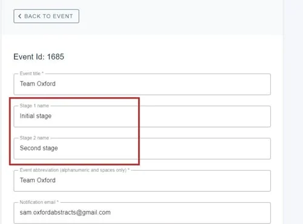
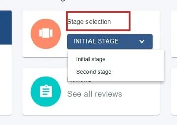
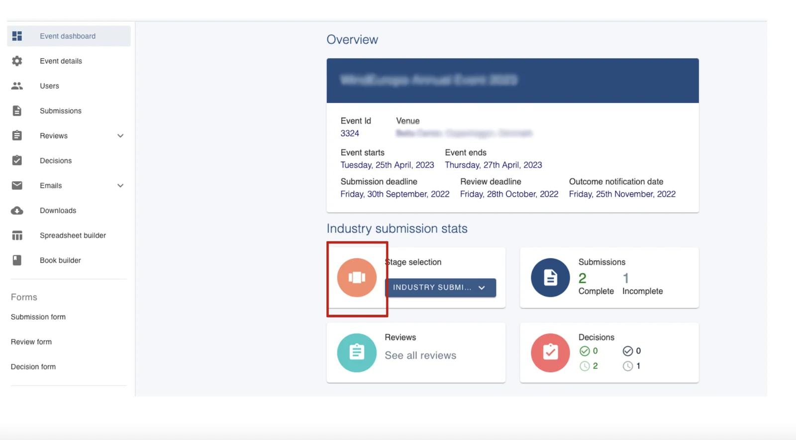
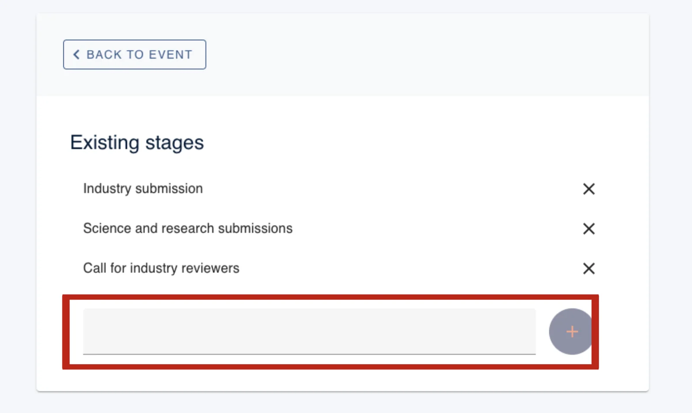
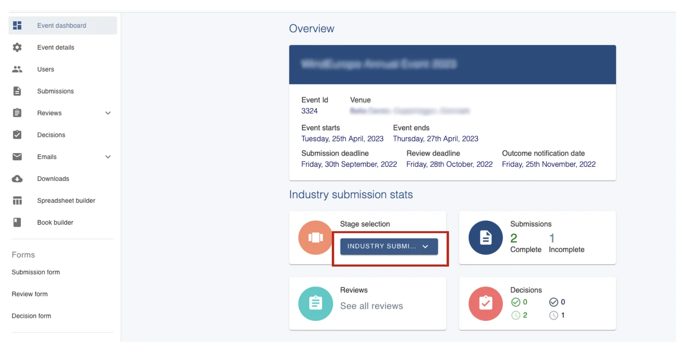
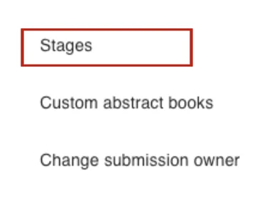
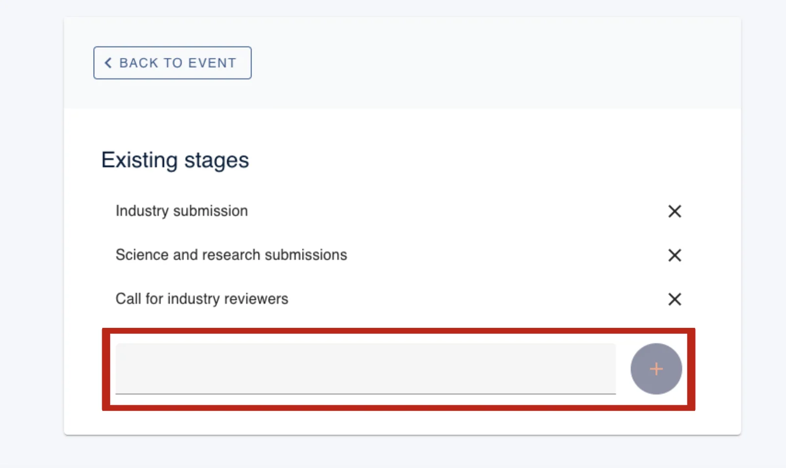
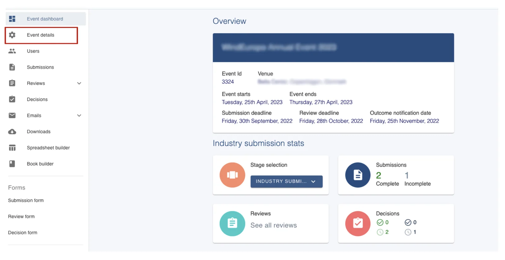
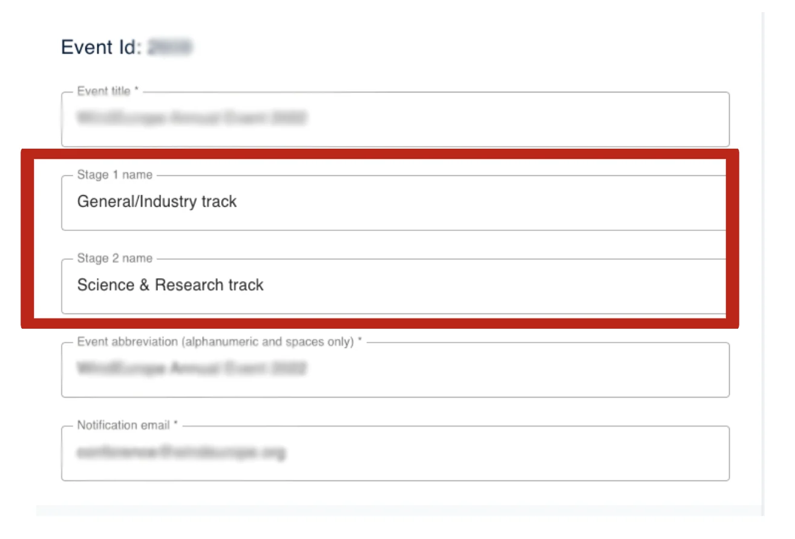

Setting up a Multi-stage event
For event organisersNot an organiser?
There is no limit to the number of stages you can have in an event and these can work independently ( ie - two separate submission processes) or can work together (ie - users submit to the first stage, and then may advance to the second).#
#
submitter, reviewer, delegate etc), please click here .
To add Multi-stage to your event, contact sales@oxfordabstracts.com.
Once you have the multi-stage bolt-on, the first step is to relabel the default stages.
The process is the same for parallel, or sequential events.
Skip to:
How to add more stages to my event
Go to Event dashboard → Event Setup → Event details
Type over the default labels to create your stages.

Once created, you will see the stages at the top right of the event dashboard in a new panel called Stage selection.
Clicking on any stage name will display the event dashboard for the selected stage where you can see the submissions, reviews and decisions in each stage.
You can select the stage you want to work on using the dropdown controls.

Please note - in order for an Administrator to add another stage, the event will already need to have in place two stages.
If your event has one stage and you want to add another stage then please get in touch with our support desk you will be able to assist you with this - support@oxfordabstracts.com.
How to add more stages#
To add more stages, go to your Event Dashboard and click Stage Selection.

Next, add the name of the stage you are wanting to add and click the plus sign.

Now your new stage will be added and can be viewed from the drop box on the Event Dashboard under Stage Selection.

Alternatively, you can scroll down the left-hand column and select Stages.

Here you will also be able to add stages.

Now navigate to and click on Event Details in the left-hand column.

You will see each Stage you have.

As you scroll down this page you will see you have the option to set deadlines for each stage.

If you require further assistance please get in touch with our help desk via our Contact Form.
Common questions#
Why would I need multi-stage?#
Multi-stage is an add-on feature that you can bolt onto your package (all except FREE).
It is perfect for when there is a two stage process, e.g. initial and final papers or where there is a concurrent stage - eg. different submission forms for different types of submission. It could also be used for prizes, awards etc or any other process that is essentially one event, but with several streams that require different submission and review forms.
The Multi-stage module allows you to bolt on as many stages as you need.
Did this page solve it?
Thanks — this helps us fix it.
Didn't solve it? Ask our support team
No question is too small, and there's no charge for asking. Raise a ticket and someone who knows the software will pick it up.